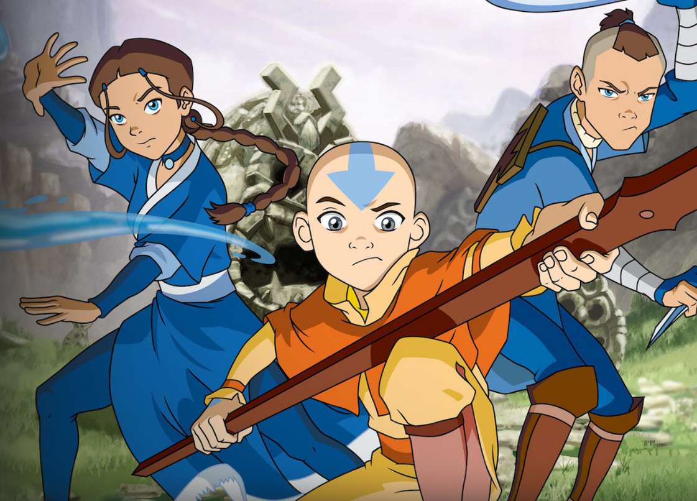

Kuch Kuch Hota Hai
This is my favourite of all time, probabbly watched 100 times. It is an indian movie.
Lead actors:
Shahrukhan, Kajor and Rani Mukerji
Avatar the Last Airbender
Simply the best anime series of all time.
Lead actors
Aang, Katara, and Sakka Friends
One of the best television sitcom of all time.